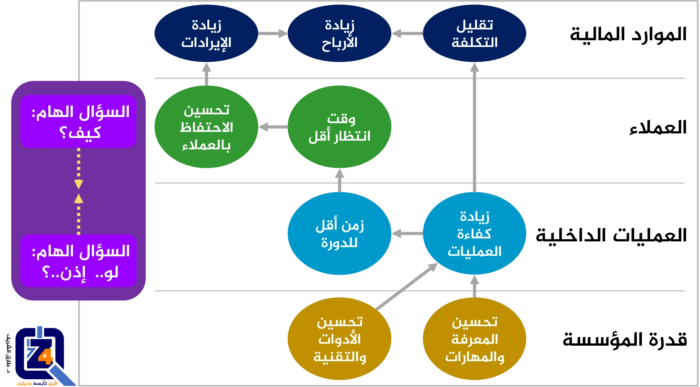

التخطيط الاستراتيجي

ما هو التخطيط الاستراتيجي؟
- التخطيط الاستراتيجي هو نشاط إداري تنظيمي، يستخدم لتحديد الأولويات، وتركيز الطاقة والموارد، وتصميم العمليات، والتأكد من أن الموظفين وجميع المساهمين يعملون نحو أهداف مشتركة، وتثبيت التوافق حول النتائج / الأهداف المرجوة، وتقييم وتعديل إتجاه المؤسسة بالاستجابة للبيئة المحيطة المتغيرة.
- التخطيط الاستراتيجي هو جهد منظم، يؤدي إلى قرارات وإجراءات أساسية، تشكل وتوجه ماهية المؤسسة، ومن هم عملائها، وماذا تفعل، ولماذا تفعل ذلك، مع التركيز بالتأكيد على المستقبل.
- لا يوضح التخطيط الاستراتيجي الفعال فقط أين تتجه المؤسسة، والإجراءات اللازمة لإحراز تقدم ما، بل أيضًا ستعرف ما إذا كانت ستكون ناجحة.
ما هي الخطة الاستراتيجية؟
- الخطة الاستراتيجية هي وثيقة تستخدم للتواصل داخل المؤسسة، بأهداف المؤسسة، والإجراءات اللازمة لتحقيق تلك الأهداف، وجميع العناصر الهامة الأخرى التي تم تحديدها أثناء وضع الخطة.
ما هي الإدارة الإستراتيجية؟ ما هو تنفيذ الإستراتيجية؟
- الإدارة الاستراتيجية هي مجموعة شاملة من الأنشطة والعمليات الجارية، التي تستخدمها المؤسسات لتنسيق ومواءمة الموارد والإجراءات بشكل منهجي، مع المهمة، والرؤية، والاستراتيجية الخاصة بالمؤسسة.
- تعمل أنشطة الإدارة الاستراتيجية على تحويل الخطة النظرية، إلى نظام يوفر معلومات الأداء الإستراتيجي لصناع القرار، ويمكّن الخطة من التطور والنمو مع تغير المتطلبات والظروف الأخرى.
- تنفيذ الاستراتيجية هو في الأساس مرادف لإدارة الإستراتيجية ويعني التنفيذ المنهجي للإستراتيجية.
ما هي خطوات التخطيط الاستراتيجي والإدارة الإستراتيجية؟
- هناك العديد من الأطر والمنهجيات المختلفة للتخطيط الاستراتيجي والإدارة الإستراتيجية. بينما لا توجد قواعد ثابتة فيما يتعلق بالإطار المناسب، يتبع معظمهم نمطًا مشابهًا، ولهم سمات مشتركة.
- تدور العديد من الأطر حول بعض المراحل الأساسية:
- التحليل أو التقييم، يتم من خلالها فهم للبيئات الداخلية والخارجية الحالية للعمل؛
- صياغة الإستراتيجية، حيث يتم تطوير إستراتيجية عليا، ثم يتم توثيق خطة إستراتيجية أساسية على مستوى المؤسسة؛
- تنفيذ الإستراتيجية، هنا يتم ترجمة الخطة الاستراتيجية العليا إلى مزيد من التخطيط التشغيلي وبنود العمل، وأخيرًا؛
- مرحلة التقييم، أو الاستدامة/الإدارة، حيث يحدث صقل وتقييم مستمر للأداء، وثقافة العمل، والتواصل، ومسار التقارير، وقضايا الإدارة الإستراتيجية الأخرى.
ما هي خريطة العمل الإستراتيجية؟

مثال على الخريطة الاستراتيجية.
- خريطة العمل الإستراتيجية عبارة عن رسم بياني بسيط، يُظهر الترابط المنطقي، وعلاقة السبب والنتيجة، بين الأهداف الإستراتيجية (تظهر على شكل أشكال بيضاوية على الخريطة).
- خريطة العمل الإستراتيجية هي واحدة من أقوى الأدوات الإدارية، حيث يتم استخدامها للتعبير بشكل سريع، عن كيفية خلق القيمة المضافة من قبل المؤسسة.
- يمكن أن تؤدي خريطة العمل الإستراتيجية إلى تحسين عملية توصيل الفكر الإستراتيجي بشكل كبير في جميع أنحاء المؤسسة. لأن معظم الناس يتعلمون أفضل بالوسائل البصرية، وبالتالي فإن مجرد صورة لاستراتيجيتك، سيفهمها العديد من الموظفين أكثر من أي سرد مكتوب.
- بالإضافة إلى ذلك، فإن عملية تطوير خريطة العمل الإستراتيجية تلزم فريق العمل على التوافق على ما يحاولون تحقيقه بعبارات بسيطة وسهلة الفهم. من خلال خريطة عمل إستراتيجية جيدة التصميم، واضحة المعالم، يمكن لكل موظف معرفة كيفية مساهمته في تحقيق أهداف المؤسسة.
إذا كنتم مهتمين بمعرفة المزيد حول التخطيط الاستراتيجي، أو كيف يمكن أن يساعدكم التخطيط الاستراتيجي في تحسين أداء وفاعلية عملكم، يسعدنا التواصل معكم، بإرسال بريدًا إلكترونيًا على العنوان التالي:
support@the4z.com